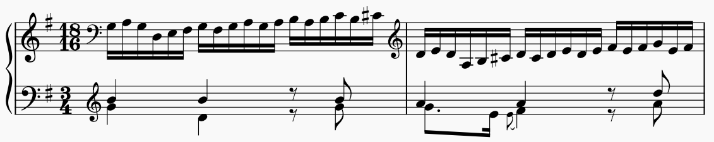
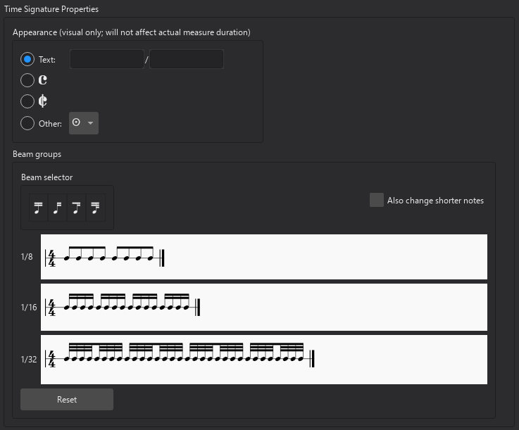

Time signatures
Overview
Time signatures are applied from the Time signatures palette:

When creating a new score, the initial time signature can be set on the second page of the New Score dialog. The default is 4/4, which will be used if you skip this page.
Adding a time signature
To add a time signature, or replace an existing one:
- Select a measure, note or rest, or time signature in the score
- Click a time signature in the Time signatures palette.
Alternatively, drag a time signature directly from the palette onto the measure where you want it to appear.
Currently, time signature changes can only occur at the beginning of a measure.
Changing a time signature will cause any existing music that follows to be re-barred, and some items may be lost in this process, so the changes should be checked carefully.
Deleting a time signature
To delete a time signature, select it and press Del.
If you delete the time signature at the beginning of the score, the music is treated as though it is in a nominal 4/4 and re-barred accordingly.
Creating a custom time signature
If you need a time signature that is not available in the palette, you can create your own using the Create Time Signature dialog. You can access this dialog from the Time signatures palette:
- In the Time signatures palette, click More
- Click the Create time signature button in the popup
Or, from the Master Palette:
- Select View -> Master palette from the menu bar, or press
Shift+F9 - Choose Time signatures from the list in the left of the dialog.
To create your time signature in this dialog:
- In Value, enter the numerator and denominator
- If you want the time signature to be displayed differently than its real value, enter the text you wish to see in the Text fields
- If necessary, adjust the beaming in the Beam groups section (see below)
To add the new time signature to the Time signatures palette, click the Add button. You can now add it to the score from the palette in the usual way.
Controlling time signature visibility
To toggle whether time signatures are to be shown on a particular staff (throughout the score):
- Right-click the staff and choose Staff/Part properties... from the context menu
- Check/uncheck the Show time signature box.
To hide a specific time signature on all staves:
- Select the time signature
- In the Properties panel, under General, uncheck the Visible toggle (or simply press
V).
For controlling visibility of courtesies, see Courtesy time signatures, below.
Adding a local time signature
Sometimes there may be different time signatures on different staves simultaneously. In this example, the global time signature is 3/4, but the right hand staff is notated in 18/16:

Bach: Goldberg Variations, no. 26
We refer to this as a 'local' time signature, i.e. one which applies only to a single staff, rather than to all staves.
To add a local time signature, add it (either by dragging from the palette to the required staff, or selecting the measure and clicking a time signature in the palette) while holding Ctrl (Mac: Cmd).
Local time signatures always result in bars of the same length as the global time signature; you can think of them as putting an invisible tuplet over each bar (in the Bach example above, an 18:12 tuplet). It is not yet possible to have bars of differing lengths.
It is also not possible to add a local time signature on a staff where there is any existing music following it.
Resizing a time signature
- Select a time signature
- In the Properties panel, under Time signature, adjust the Scale values. The horizontal and vertical scale can be modified separately.
Changing the scale affects the time signature on all staves where it appears.
Time signature properties
To open the Time Signature Properties dialog, either:
- Right-click on a time signature and select Time signature properties from the menu
- Select a time signature and click the Time signature properties button under Time signature in the Properties panel.

Appearance
These options let you change the appearance of the time signature without affecting its underlying rhythmic value. Choose between:
- Text: Insert the nominal numerator and denominator that you wish to appear on the score (if empty, the real values will appear in the score)
- Common time
- Cut time (2/2)
- Other: a dropdown containing Medieval and Renaissance prolation symbols.
Beam groups
Here you can customise how groups of notes are beamed together. See Setting the default beaming for a time signature.
Courtesy time signatures
Normally, when a time signature change falls at the start of the system, a courtesy (also called cautionary) is shown at the end of the previous system.
To disable or re-enable all courtesy time signatures throughout the score:
- Select Format -> Style from the menu bar and
- Select Clefs, keys & time signatures from the list on the left
- Under Time signatures, check/uncheck the Show courtesy time signatures box.
To hide or show an individual courtesy time signature:
- Select the parent time signature (i.e. not the courtesy itself)
- In the Properties panel, under Time signature, check/uncheck the Show courtesy time signature on previous system box.
To control what happens around repeats and jumps, see Changes and courtesies at repeats and jumps.
Time signature styles
There are three options for time signature position available in the style dialog (Format -> Style -> Clefs, key & time signatures) under Time signatures -> Position:
- On all staves: show the time signature on each stave (this is the default, and most common style)
- Above staves: show the time signature above specific staves only, usually at a larger size
- Across staves: show the time signature across the staves, usually at a much larger size
For the 'Above staves' and 'Across staves' options, time signatures are treated as system markings and will appear at the positions you specify for system markings in the Layout panel. See Managing system markings for more information.
This is followed by settings for Style and size, which are somewhat different for each of the three Position settings, and can be set independently for each style:
- Numeral style, with three options:
- normal
- narrow (often used for 'Above staves' and 'Across staves' styles)
- narrow sans-serif (often used for the 'Across staves' style, especially in band and film scores)
- Alignment with barlines (for 'Above staves' only): whether the time signatures should be left-aligned or centered over barlines
- Alignment across staves (for 'Across staves' only): whether the time signatures should be aligned to the top of the group that they apply to, or vertically centered
- Scale: the size of the time signatures as a multiple of their 'normal' size; the horizontal and vertical settings are linked, but if you want to adjust them independently, click the lock icon to the right
- Gap between numbers (scaled): the vertical distance between the top and bottom numbers in the time signature, scaled to the vertical Scale setting
- Vertical placement: offset from the default vertical position
If Show courtesy time signatures is turned on, the 'Above staves' style also has options for End-of-staff alignment:
- Hang into page margin: allow the time signature to hang into the margin (only available if Alignment with barline is set to centered)
- Inset time signature: right-justify the time signature to the margin, without moving the barline
- Inset barline: right-justify the time signature to the margin, moving the barline inward to maintain the required alignment
There are some more global style settings for time signatures available in the style dialog (Format -> Style):
- In Measures, under Padding, some settings to configure the distances between time signatures and other items:
- Clef to time signature
- Key signature to time signature
- Barline to time signature
- Time signature to barline
- In Measures, under System header, one more distance setting:
- Time signature to first note (this only applies at the beginning of a system)
- In Barlines, Use double barlines before time signatures has three options:
- Always: always use a double barline
- Never: always use a single barline
- Only before courtesy time signatures: use a double barline before courtesies, but a single barline otherwise.